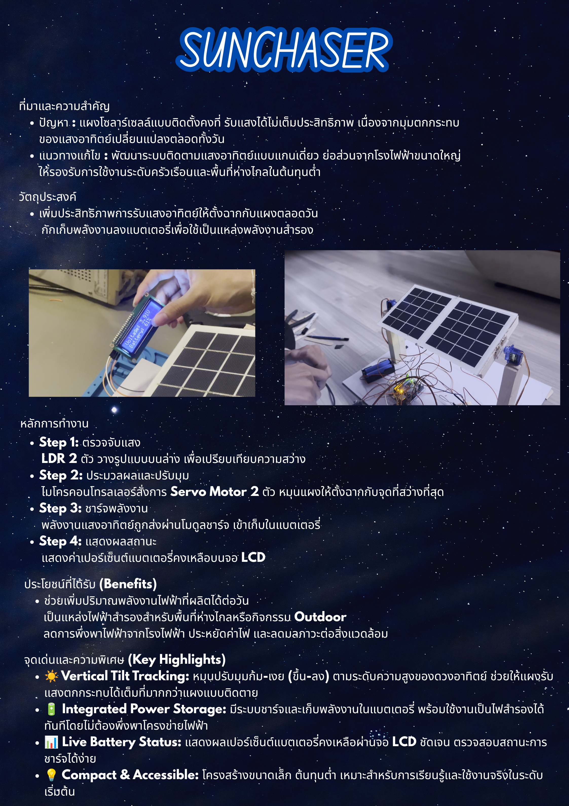
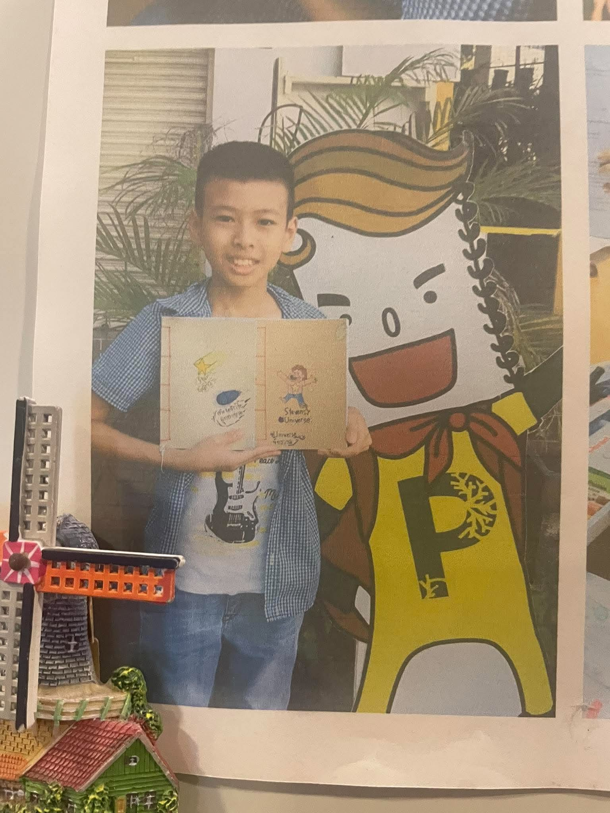

บทคัดย่อ
SunChaser เป็นโครงงานแผงโซลาร์เซลล์ขนาดเล็กที่สามารถหมุนตามแสงอาทิตย์ได้เองโดยอัตโนมัติ เพื่อแก้ปัญหาแผงโซลาร์เซลล์แบบเดิมที่ติดตั้งอยู่กับที่ ทำให้รับแสงได้ไม่เต็มที่เมื่อดวงอาทิตย์เคลื่อนที่ตลอดวัน ระบบนี้ทำงานโดยใช้ LDR (Light Dependent Resistor) เปรียบเทียบความสว่างเพื่อสั่งให้เซอร์โวมอเตอร์หมุนแผงหันไปหาทิศทางที่มีแสงมากกว่าอยู่เสมอ นอกจากนี้ พลังงานที่ได้ยังถูกนำไปชาร์จเก็บไว้ในแบตเตอรี่ผ่านแผงโซลาร์เซลล์ และสามารถดึงไฟจากแบตเตอรี่กลับมาเลี้ยงบอร์ด Arduino ได้โดยตรง พร้อมต่อวงจรแบ่งแรงดันไฟฟ้าเพื่อวัดระดับแรงดันแบตเตอรี่ผ่านขา A2 และแสดงผลแรงดันรวมถึงเปอร์เซ็นต์แบตเตอรี่แบบเรียลไทม์ผ่านจอ LCD I2C (16x2) ทำให้ระบบสามารถทำงานได้ต่อเนื่องด้วยตัวเอง
ภาพรวมโครงการ
SunChaser คือระบบแผงโซลาร์เซลล์ขนาดเล็กที่หมุนตามดวงอาทิตย์ได้โดยอัตโนมัติ ใช้ LDR ตรวจจับทิศทางของแสง แล้วสั่งมอเตอร์หมุนแผงไปด้านที่มีแสงอยู่เสมอ พลังงานที่ได้จะถูกชาร์จเข้าแบตเตอรี่เพื่อเป็นไฟสำรอง พร้อมแสดงสถานะแรงดันและเปอร์เซ็นต์แบตเตอรี่บนจอ LCD I2C
จุดประสงค์ของโครงการ
- สร้างระบบแผงโซลาร์เซลล์ที่หมุนตามดวงอาทิตย์ เพื่อให้แผงรับแสงได้มากกว่าแผงแบบติดตาย
- เก็บพลังงานไว้ในแบตเตอรี่ และตรวจสอบระดับแรงดัน/เปอร์เซ็นต์แบตเตอรี่ผ่านจอ LCD ได้อย่างแม่นยำ
ประโยชน์ของโครงการ
โครงงานนี้เป็นประโยชน์ต่อบุคคลทั่วไปที่ต้องการใช้งานแผงโซลาร์เซลล์ ผู้ที่ต้องการประหยัดค่าไฟฟ้า และผู้ที่อาศัยอยู่ในพื้นที่ห่างไกลหรือไม่มีโครงข่ายไฟฟ้าหลัก โดยช่วยให้มีแหล่งพลังงานสำรองขนาดพกพาที่สามารถผลิตและเลี้ยงพลังงานตัวเองได้ มีระบบแสดงผลสถานะแบตเตอรี่ชัดเจน มีต้นทุนต่ำ เข้าถึงและสร้างขึ้นเองได้ง่าย และช่วยส่งเสริมการใช้พลังงานสะอาดเพื่อลดมลภาวะต่อสิ่งแวดล้อม
แนวทางการแก้ปัญหาและหลักการทำงานของระบบ
1. การตรวจจับแสงและการสั่งการเซอร์โวมอเตอร์
เซนเซอร์ LDR จะคอยตรวจจับแสง โดยระบบจะปล่อยกระแสไฟเข้าไปผ่าน LDR จากนั้นนำค่าสัญญาณแอนะล็อกที่อ่านได้จากขา A0 และ A1 มาเปรียบเทียบความสว่าง หากผลต่างมากกว่าค่า Threshold (80) ไมโครคอนโทรลเลอร์จะสั่งให้ Servo Motor หมุนปรับองศาแผงโซลาร์เซลล์ไปยังด้านที่สว่างกว่าทันที
2. การชาร์จแบตเตอรี่ การวัดแรงดัน และการแสดงผล
ใช้ Solarcell 2 ตัว ต่อแบบอนุกรม เพื่อให้ระดับแรงดันสูงพอที่จะชาร์จแบตเตอรี่ผ่าน Diode ป้องกันไฟไหลย้อนกลับ พร้อมใช้วงจรแบ่งแรงดันไฟฟ้า (R1 = 10kΩ, R2 = 10kΩ) ต่อเข้ากับขา A2 ของ Arduino เพื่ออ่านค่าแรงดันแบตเตอรี่ คำนวณเป็นเปอร์เซ็นต์ และแสดงผลผ่านจอ LCD I2C
สรุปขั้นตอนการทำงานของระบบ
- ตรวจจับทิศทางแสง: อ่านค่าความสว่างจาก LDR ผ่านขา A0 และ A1
- ประมวลผลและหมุนแผงตามแสง: เปรียบเทียบค่าความสว่างด้วยเกณฑ์ Threshold (80) และสั่งเซอร์โวมอเตอร์ปรับทิศทางแผงโซลาร์เซลล์
- วัดระดับแรงดันแบตเตอรี่: อ่านค่าแอนะล็อกที่ขา A2 ผ่านวงจรแบ่งแรงดัน คำนวณแรงดันจริงและแปลงเป็นเปอร์เซ็นต์แบตเตอรี่
- แสดงผลสถานะ: อัปเดตข้อมูล Voltage และ Battery % บนจอ LCD I2C แบบเรียลไทม์
อุปกรณ์ที่ใช้
วิดีโอสาธิตโครงการ
โปสเตอร์นำเสนอโครงงาน

Source Code
#include <Servo.h>
#include <LiquidCrystal_I2C.h>
LiquidCrystal_I2C lcd(0x27, 16, 2);
const int ldrPin1 = A0;
const int ldrPin2 = A1;
const int batteryPin = A2;
const int servoPin = 2;
Servo myServo;
const int stopSpeed = 90;
const int upSpeed = 180;
const int downSpeed = 0;
const int threshold = 80;
const float referenceVoltage = 4.48;
const float R1 = 10000.0;
const float R2 = 10000.0;
void setup() {
setupLCD();
Serial.begin(9600);
myServo.attach(servoPin);
myServo.write(stopSpeed);
}
void loop() {
int value1 = analogRead(ldrPin1);
int value2 = analogRead(ldrPin2);
int difference = value1 - value2;
Serial.print("LDR1: ");
Serial.print(value1);
Serial.print(", LDR2: ");
Serial.print(value2);
Serial.print(", Difference: ");
Serial.println(difference);
if (difference > threshold) {
myServo.write(downSpeed);
}
else if (difference < -threshold) {
myServo.write(upSpeed);
}
else {
myServo.write(stopSpeed);
}
float voltage = readBatteryVoltage();
int percent = constrain(batteryPercent(voltage), 0, 100);
displayBattery(voltage, percent);
delay(100);
}
float readBatteryVoltage() {
int raw = analogRead(batteryPin);
float voltageA0 = raw * referenceVoltage / 1023.0;
float batteryVoltage = voltageA0 * (R1 + R2) / R2;
return batteryVoltage;
}
int batteryPercent(float voltage) {
if (voltage >= 4.20) return 100;
if (voltage <= 3.30) return 0;
if (voltage >= 4.10) return 90 + (voltage - 4.10) * 100;
if (voltage >= 4.00) return 80 + (voltage - 4.00) * 100;
if (voltage >= 3.90) return 60 + (voltage - 3.90) * 200;
if (voltage >= 3.80) return 40 + (voltage - 3.80) * 200;
if (voltage >= 3.70) return 20 + (voltage - 3.70) * 200;
return (voltage - 3.30) * 20;
}
void displayBattery(float voltage, int percent) {
lcd.setCursor(0, 0);
lcd.print("Voltage: ");
lcd.print(voltage, 2);
lcd.print("V ");
lcd.setCursor(0, 1);
lcd.print("Battery: ");
lcd.print(percent);
lcd.print("% ");
}
void setupLCD() {
lcd.init();
lcd.backlight();
lcd.clear();
lcd.setCursor(0, 0);
lcd.print("Battery Monitor");
delay(1500);
lcd.clear();
}แหล่งอ้างอิง
-
CleanTechnica. (2014). World's Largest Tracking Solar PV Plant Completed In California.
https://cleantechnica.com/2014/05/23/worlds-largest-tracking-solar-pv-plant-completed-california/ -
RenewEconomy. World's biggest solar PV tracking plant completed in US.
https://reneweconomy.com.au/worlds-biggest-solar-pv-tracking-plant-completed-in-us-64379 -
Electromaker. Arduino Dual-axis Solar Tracker: 40% More Power.
https://www.electromaker.io/project/view/arduino-dual-axis-solar-tracker-40-more-power -
DIY เครื่องชาร์จแบตเตอรี่ พลังงานแสงอาทิตย์ จากแผงโซลาร์เซลล์ 5V.
https://www.youtube.com/watch?v=Ms-8QUGW0-s
สมาชิกในกลุ่ม
